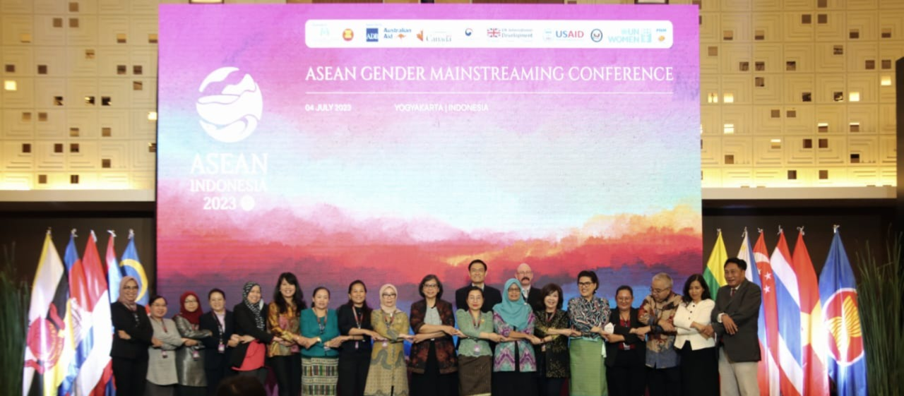
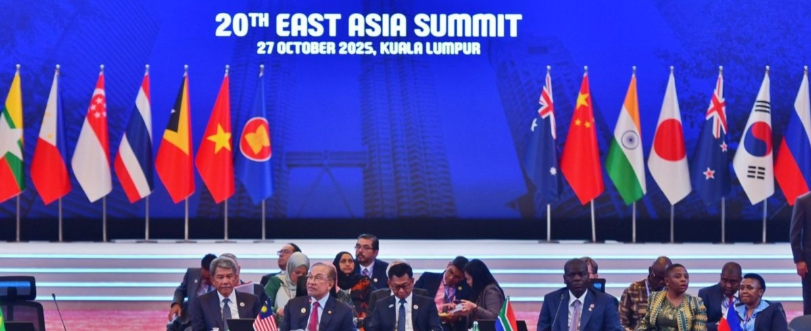

📋 Pengertian Kerjasama Regional
Kerjasama regional adalah bentuk kerjasama yang melibatkan beberapa negara dalam satu wilayah geografis yang sama untuk mencapai tujuan bersama. Dalam konteks SDG 5 (Kesetaraan Gender), kerjasama regional di Asia Tenggara melibatkan anggota ASEAN dan organisasi regional lainnya untuk meningkatkan kesetaraan gender melalui koordinasi kebijakan, pertukaran praktik terbaik, dan program-program kolaboratif.
Ciri-Ciri Kerjasama Regional:
- Melibatkan beberapa negara dalam satu wilayah geografis
- Dikoordinasikan melalui organisasi regional (seperti ASEAN)
- Fokus pada isu-isu yang relevan bagi seluruh wilayah
- Menciptakan standar dan kebijakan regional yang konsisten
- Memfasilitasi pertukaran pengalaman dan pembelajaran bersama
🤝 Contoh Kerjasama Regional Indonesia mengenai SDG 5
1. ASEAN: Program Kesetaraan Gender dan Pemberdayaan Perempuan
Latar Belakang: ASEAN (Association of Southeast Asian Nations) telah menjadikan kesetaraan gender sebagai prioritas strategis dalam agenda pembangunan regional. Dengan komitmen terhadap SDG 5, negara-negara ASEAN bekerja sama untuk menciptakan lingkungan yang mendukung pemberdayaan perempuan di seluruh kawasan Asia Tenggara.
Periode Program: Ongoing ASEAN cooperation dengan fokus jangka panjang hingga 2030.
Fokus Program Utama:
- ASEAN Regional Forum on Gender Equality: Forum tahunan yang membahas perkembangan gender equality di kawasan dan merumuskan strategi bersama
- Harmonisasi Kebijakan: Upaya untuk menyelaraskan kebijakan kesetaraan gender di tingkat regional dengan menjunjung tinggi nilai-nilai lokal
- Program Pemberdayaan Perempuan Pengusaha: Dukungan untuk perempuan dalam mengakses pasar regional dan mengembangkan usaha lintas negara
- Pertukaran Ahli dan Penelitian: Kolaborasi dalam penelitian gender dan pertukaran praktisi di bidang kesetaraan gender
- Pelatihan Kepemimpinan Regional: Program pelatihan kepemimpinan untuk perempuan muda dari berbagai negara ASEAN
Lembaga Terkait: ASEAN Secretariat, ASEAN Regional Forum, Kementerian Pemberdayaan Perempuan dari masing-masing negara, dan organisasi regional lainnya.
Manfaat untuk Indonesia dan Kawasan: Indonesia sebagai salah satu pemimpin ASEAN mendapat kesempatan untuk berbagi pengalaman, belajar dari praktik terbaik negara lain, dan berkontribusi dalam pembentukan standar regional untuk kesetaraan gender yang lebih baik.

2. East Asia Summit: Platform Dialog tentang Kesetaraan Gender di Asia Timur
Latar Belakang: East Asia Summit adalah forum regional yang mencakup negara-negara Asia Timur dan Asia Tenggara. Indonesia, sebagai anggota, menggunakan platform ini untuk membahas isu-isu strategis termasuk kesetaraan gender dan pemberdayaan perempuan.
Periode Program: Kolaborasi berkelanjutan melalui forum East Asia Summit.
Fokus Program Utama:
- Dialog Kebijakan Strategis: Diskusi tingkat tinggi tentang strategi kesetaraan gender dalam konteks pembangunan ekonomi regional
- Kerjasama Ekonomi Inklusif: Memastikan bahwa pertumbuhan ekonomi regional memberikan manfaat yang adil bagi perempuan
- Program Pertukaran Pelajar: Beasiswa untuk perempuan muda untuk belajar di universitas negara-negara mitra
- Konferensi Perempuan Profesional: Pertemuan tahunan untuk profesional perempuan dari berbagai bidang untuk berbagi pengalaman dan membangun jaringan
Lembaga Terkait: East Asia Summit Secretariat, kementerian luar negeri dan pemberdayaan perempuan dari masing-masing negara anggota.
Manfaat untuk Indonesia: Meningkatkan visibilitas Indonesia dalam agenda kesetaraan gender regional, berpartisipasi dalam formulasi standar regional, dan memperkuat posisi Indonesia sebagai pemimpin pembangunan berkelanjutan di Asia.

💡 Dampak Kerjasama Regional untuk SDG 5 di Indonesia dan Kawasan
- Harmonisasi Kebijakan: Kebijakan kesetaraan gender di Indonesia menjadi lebih konsisten dengan standar regional, menciptakan lingkungan bisnis dan sosial yang lebih stabil untuk perempuan.
- Pembelajaran Kolektif: Indonesia dapat belajar dari praktik terbaik negara-negara lain di kawasan dan mengadopsi strategi yang telah terbukti efektif.
- Peningkatan Akses Pasar: Kerjasama regional membuka peluang bagi perempuan Indonesia untuk mengakses pasar regional dan mengembangkan karir internasional.
- Peningkatan Standar Pendidikan: Program pertukaran pelajar dan penelitian menghasilkan generasi perempuan muda yang lebih terampil dan berwawasan global.
- Solidaritas Regional: Kerjasama regional membangun solidaritas dan jaringan di antara perempuan di kawasan Asia, memperkuat gerakan kesetaraan gender yang lebih luas.
- Pengaruh Politik: Kolaborasi regional meningkatkan pengaruh Indonesia dalam membentuk agenda pembangunan berkelanjutan di tingkat regional dan global.